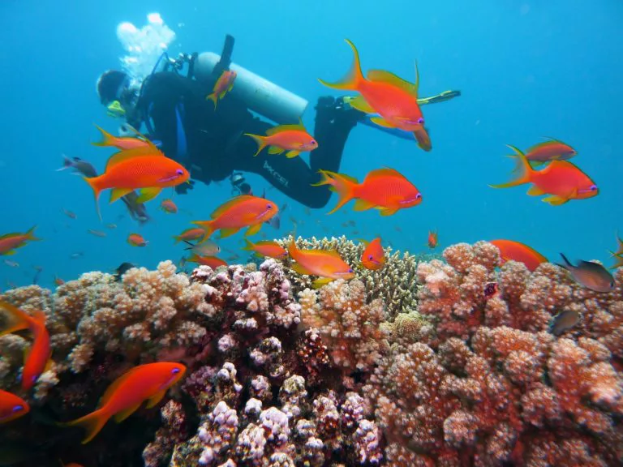

IT’S TIME TO VISIT THE ANDAMANS!
Have you dreamed of a destination that offers crystal blue-green waters, beautiful white beaches, a plethora of marine life and water sports,
umpteen outdoor activities and delicious cuisine? It’s time to visit the Andamans!

BEST TIME TO VISIT
Summer :
Summer in the Andamans begins in April and lasts till June, with warm but pleasant weather. This is the ideal time of the year for scuba
diving, snorkelling, boat rides or trekking.
Monsoon :
Now while water sports and underwater exploration may not be the highlight of this season, the monsoons are actually a beautiful thing
to witness in the Andamans. The temperature drops to a comfortable chill and makes for great warm drinks and yummy hot snacks. This
is a good time to visit for cosy, romantic getaways, and indoor fun with friends.
Winter :
Tourist season oscillates between summer and winter, but winter is certainly more popular because of the pleasant and enjoyable weather.
With temperatures ranging between 20 and 30 degrees Celsius, winters are considered to be the best time to visit the Andamans for the best
of indoor and outdoor holiday fun.
WHEN TO BOOK TICKETS:
Make sure you’re on top of your bookings when planning a trip to the Andamans. Of course, this involves determining whether you are travelling
by yourself, with friends or family, and with or without children. Each travel dynamic has its own set of travel guidelines and planning timelines.
Some useful tips, while booking is:
Get mid-week tickets: Everybody is aiming for a long weekend getaway so flight tickets or hotel bookings are always going to be a struggle.
Instead, opt for a mid-week booking, which is not only more likely to be available in more than one option, but will likely be lighter on your
wallet as well.
Vacation Time for Kids: If you’re travelling with kids, then plan your trip around their school vacations. There are three primary vacation options,
namely, the summer holidays, Christmas vacation around December-January, and a Diwali break around October and November. Choose your
tickets in a way that give your kids a couple of days to get back into school mode before their vacation ends.
Early Birds: Remember, if you book your trip early, it’s likely you will have more flight and hotel room options. It’s always good to plan ahead.
If you have a certain number of days on leave, book in between those days, in case you need to adjust your booking one or two days back and forth.
WHAT TO DO AT DIFFERENT TIMES OF THE YEAR:
Summer is the best time for outdoor activities like scuba diving, snorkelling, boating and trekking. The Andamans offer many beaches, hiking trails and gorgeous diving spots. Laxmanpur Beach offers a secluded holiday experience, with beautiful views, that salty sea air, and some solitude for romantic holidayers and private groups. If you’re looking for more action, try Havelock Beach, known for a plethora of fun activities to choose from including diving, snorkelling, swimming, water sports, boating and more.
A magical curtain of romance falls over the Andamans during the monsoon season. It’s a photographer’s paradise, with lush greenery and stunning views. And let’s not forget that this time of the year is perfect for travellers with tighter budgets. You can choose from a wide range of accommodation options during this time, without worrying about very expensive tariffs. Even though outdoor activities by the water and sand are limited, there’s still a lot you can do in the Andamans during the monsoon. You can take a long walk along the gorgeous Radhanagar Beach, or take a scenic drive through Andaman Trunk Road. On a sunnier day, you could go snorkelling at Bharatpur Beach, or visit the Kalapani Cellular Jail for an interesting stroll down India’s history, and then top the day off with some delicious seafood.
HOW TO GET THERE
Since the Andamans are islands, the two ways to get there are by sea or air. The airport is at Port Blair and is accessible by air from various major cities in India including Kolkata, Chennai and Visakhapatnam. If you want to travel by sea, you would have to sail from the ports of either Kolkata, Chennai and Visakhapatnam. The journey would take about 3 to 4 days.
KEEP IN MIND
Some important tips that will ensure your vacation is fully enjoyable include:
- Get a weather forecast for your period of stay in the Andamans before travelling there.
- Pre-book a local tour guide who speaks the local language as well as your preferred language, who can take you around.
- Always keep your luggage and travel documents locked and your IDs with you.
- Plan your trip in advance and save money.
- Observe the local dressing and social etiquettes, especially in the less commercial areas.
The Andamans are a paradisiacal vacation destination for good reason. Be it any time of the year, and you can rest assured you will have a holiday to remember. Every season has something special to offer and suits every kind of traveller. Choose your days, plan ahead, make your bookings and you’ll be on this magical island in no time!